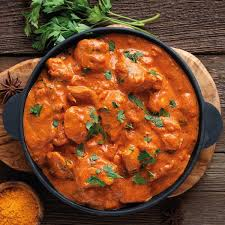

Butter Chicken
A savory and delicious recipe for the well-known curry
Butter chicken is a curry that is a staple around the world. Originating in Delhi, India
this curry is easy to make and delicious to enjoy. All it requires is a few simple ingredients to make
the curry itself, and lots of spices to add to the savory flavor of this curry. As it can be made with mild
spices, this dish can be enjoyed by anyone.
The main elements of butter chicken include marinating chicken with spices such as cumin,
turmeric, garlic, ginger. Yogurt, lemon juice, butter, and cream make the curry base. Typically,
butter chicken is produed in a clay oven or tandoor, however, it is perfectly fine to use a
traditional pan on the stove
Ingredients
For the chicken marinade
- 28oz of boneless and skinless chicken breasts chopped into 1/4 in pieces
- 1/2 C plain yogurt
- 1 1/2 tablespoons minced garlid
- 1 tablesoon minced ginger
- 2 teaspoons garam masala
- 1 teaspoon turmeric
- 1 teaspoon ground cumin
- 1 teaspoon red chili powder
- 1 teaspoon salt
For the curry
- 2 tablespoons olive oil
- 2 tablespoons ghee (or 1 tablespoon butter and 1 tablespoon of any oil)
- 1 large onion choppen
- 1 1/2 tablespoon minced or chopped garlic
- 1 tablespoon minced ginger
- 1 1/2 teaspoon ground cumin
- 1 1/2 teaspoon garam masala
- 1 teaspoon ground coriander
- 14oz crushed tomatoes
- 1 1/2 teaspoon red chili powder
- 1 1/4 teaspon salt for taste (adjust to your preference)
- 1 cup heavy cream
- 1 tablespoon sugar
- 1/2 teaspoon dried fenugreek leaves (kasoori methi)
Steps
- Combine the chicken with all of the chicken marinade ingredients. Mix well and refrigerate
chicken combination.Allow chicken to marinate overnight.
- After marinating, heat any oil on a skillet on medium heat. Cook chicken for about 3 minutes
and set aside.
- Heat your ghee or butter/oil in the same pan. Add the onions after a minute and allow them
to fry for aobut 5 minutes. Stir frequently to prevent onions from burning.
- Add garlic and ginger and saute for about a minute. Then add the spices (ground cumin,
coriander, and garam masala). Cook for about 20 seconds while stirring.
- Add crushed tomatoes, red chili powder, and salt. Allow curry base to simmer
for about 10 to 15 minutes, or until the curry reaches a deep red color
- Remove the curry from the heat and blend the base until it is smooth. You can add up to
1/4 C water to help create a smoother mixture.
- Pour the pureed curry back into the pan. On medium, add the butter cream, sugar, and
dried fenugreek leaves with the sauce.
- Add the chicken marinade back into the pan and cook for about 10 more minutes
until the chicken is cooked and the sauce is thicker and bubbling.
- Garnish with cilantro, and enjoy your finished curry with rice or garlic naan!